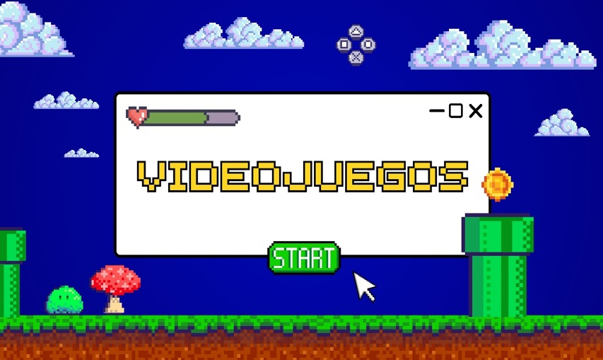
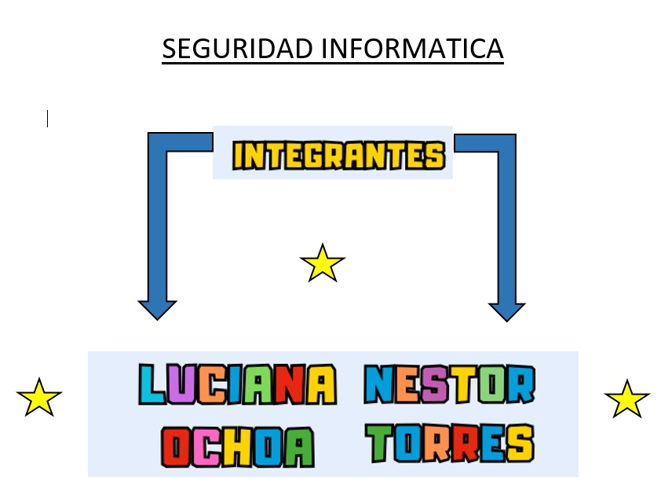
SEGURIDAD INFORMATICA

INTRODUCCIÓN
En esta sección se presenta el propósito del índice del videojuego, dirigido a quienes buscan explorar y adquirir juegos de consola clásicas y actuales.
Esta guía ofrece una lista organizada de juegos disponibles según cada consola de preferencia, y además facilitando,
un formulario que permite al usuario especificar sus datos personales y el juego que desee y se registrara para su compra del juego.
OBJETIVOS
• Proporcionar una lista completa de videojuego organizados por consola.
• Simplificar el proceso de selección y compra del juego y lo hace más rápido a través de un formulario.
• Ofrece una referencia útil para conocer los juegos disponibles en distintas plataformas.
LISTA DE CONSOLAS Y JUEGOS DISPONIBLES
Esta es la sección principal del índice,
donde se organizan los videojuegos según la consola
o plataforma en la que están disponibles. Cada consola tiene su propio
listado de títulos, detallado tanto los juegos más populares como los exclusivos
para esa consola. Esto permitirá al usuario identificar fácilmente qué juegos
están disponibles para la plataforma de su interés.
ESTRUCTURAS DE LA LISTA DE CONSOLAS
Aquí se incluye los títulos disponibles para:
PlayStation 2: Es famosa por su extenso catálogo y la diversidad de juegos de alta calidad que ofreció.
PlayStation 3: Ofreció gráficos avanzados y juegos en línea.
PlayStation 4: Esta generación trajo algunos de los juegos más avanzados tecnológicamente y narrativamente innovadores hasta la fecha, con muchos juegos exclusivos de gran éxito.
PlayStation 5: Aprovechan al máximo las capacidades de la consola, con gráficos impresionante y tiempo de carga mínimo.
PC: Es famosa por su diversidad y capacidad de soportar juego de todo tipo, desde clásicos hasta los títulos de gráficos avanzados.
4. FORMULARIO DE COMPRA DE JUEGOS
Esta sección facilitando al usuario la adquisición de los juegos. Aquí se encuentra un formulario simple que debe completar para registrar su información y seleccionar el juego de su elección. La sección también incluye instrucciones para guiar al usuario en el proceso de llenar el formulario correctamente.
CAMPO DEL FORMULARIO
NOMBRE: Se solicita el nombre para identificar al comprador
APELLIDO: El apellido del comprador para una identificación completa.
TELEFONO: Un campo de contacto para poder realizar el seguimiento de la solicitud y confirmar la compra.
SELECCIÓN DE JUEGO: En este campo, el usuario elige el título de su interés de la lista de videojuegos disponibles.
INTRODUCCIÓN PARA EL USUARIO
-Completa cada campo con su información personal.
-Selecciona el juego que deseas comprar, asegurándote de que esté el disponible para la consola o plataforma que prefiere.
-Verifica que los datos estén correctos antes de enviar el formulario.
RESUMEN
Este proyecto sobre videojuegos ofrece una guía organizada y completa para los usuarios que desean explorar y adquirir videojuegos de diversas consolas, incluyendo PlayStation2,
PlayStation3, PlayStation4, PlayStation5, PC. Cada consola tiene una lista especifica de juegos disponibles, destacando tanto los títulos populares como los exclusivos para cada plataforma, lo que facilita que el usuario encuentre rápidamente los juegos de su interés.
Incluye un formulario de compra sencilla que permite al usuario llenar sus datos personales (nombre, apellido, email y su teléfono) y seleccionar el juego que desea comprar.
Está diseñado para ofrecer una experiencia de compra intuitiva, rápida y directa, con toda la información organizada por consola, optimizado el proceso de selección y compra para el usuario interesado en videojuegos de varias generaciones y plataformas.
El sistema cuenta con una interfaz inicial de inicio de sesión diseñada para garantizar la seguridad y el acceso autorizado. En esta sección, el usuario encuentra un formulario que solicita dos datos esenciales: su nombre de usuario y la contraseña correspondiente. Este módulo está construido para verificar las credenciales ingresadas, asegurándose de que sean válidas y estén registradas en la base de datos del sistema. Una vez autenticado, el usuario es dirigido a la sección principal de modificaciones y gestión de juegos.
En esta sección, el sistema ofrece una herramienta robusta y flexible para la gestión de videojuegos, pensada tanto para la adición como para la personalización de los juegos disponibles. Al ingresar, el usuario puede agregar nuevos títulos al catálogo. Para ello, debe proporcionar información clave, como el nombre del juego, que permite identificarlo de manera precisa en el sistema. Además, se incluye un campo para especificar el espacio de almacenamiento requerido por el juego, una característica fundamental para garantizar que los recursos del sistema sean utilizados de manera eficiente.
El sistema también permite seleccionar el formato del juego, un parámetro crucial para definir su compatibilidad con las diferentes plataformas disponibles. El usuario puede elegir entre una variedad de opciones, que incluyen PlayStation 2, PlayStation 3, PlayStation 4, PlayStation 5 y PC. Esta flexibilidad asegura que el catálogo de juegos sea accesible para una amplia gama de usuarios, independientemente de la consola o dispositivo que utilicen.
La interfaz está diseñada de manera intuitiva, con menús desplegables y campos claros que guían al usuario durante todo el proceso. Cada modificación realizada se valida automáticamente para evitar errores, garantizando así que los datos ingresados cumplan con los requisitos técnicos del sistema. Al finalizar, los cambios pueden guardarse para actualizar el catálogo general de juegos, manteniendo el sistema actualizado y optimizado para futuras consultas o descargas.
INTRODUCCIÓN DEL PROYECTO
En el presente proyecto se busca desarrollar una herramienta digital en forma de formulario interactivo, con el objetivo principal de proporcionar a los usuarios una experiencia sencilla, eficiente y organizada para explorar, seleccionar y gestionar videojuegos. Este sistema no solo está diseñado para satisfacer las necesidades actuales de los aficionados a los videojuegos, sino también para adaptarse a las exigencias de un mercado dinámico y en constante evolución.
El creciente interés por los videojuegos de diversas generaciones y plataformas ha generado la necesidad de contar con un sistema que facilite el acceso a títulos variados. Por ello, este formulario está configurado para incluir una amplia gama de plataformas, como PlayStation 2, PlayStation 3, PlayStation 4, PlayStation 5 y PC, abarcando tanto los clásicos como los lanzamientos más recientes. Este enfoque inclusivo busca garantizar que los usuarios puedan encontrar los juegos que se ajusten a sus preferencias, dispositivos y requisitos técnicos.
Además, el proyecto responde a la necesidad de centralizar información y simplificar el proceso de gestión y adquisición de videojuegos. A través de esta herramienta, se podrán registrar datos esenciales como el nombre del juego, su formato, espacio de almacenamiento y cualquier otro detalle relevante para la organización y personalización del catálogo. Al integrar estas funcionalidades en un único sistema, se reduce la complejidad de los procesos y se optimiza la experiencia del usuario.
La implementación de este formulario no solo se centra en la funcionalidad técnica, sino también en la experiencia del usuario, priorizando una interfaz intuitiva y accesible. Desde el momento en que el usuario accede al sistema mediante un inicio de sesión seguro, hasta la selección y modificación de los juegos, cada paso está diseñado para ser fluido y eficiente. Esto aseguraque usuarios ocasionales como aquellos con mayores conocimientos técnicos puedan interactuar con la herramienta sin dificultades.
En conclusión, este proyecto representa una solución integral para la gestión de videojuegos, al combinar una experiencia de usuario optimizada, una amplia compatibilidad con distintas plataformas y la capacidad de personalizar y organizar un catálogo de juegos. Su desarrollo tiene como meta no solo atender las necesidades actuales, sino también establecer una base sólida para futuras mejoras y expansiones del sistema.

El objetivo de este análisis es proporcionar una estructura clara y funcional para la organización y selección de videojuegos disponibles en varias consolas y plataformas. Mediante este índice, se busca:
1. Facilitar la exploración de videojuegos: Organizando los títulos por consola (PlayStation 2, PlayStation 3, PlayStation 4, PlayStation 5 y PC), el índice permite a los usuarios encontrar los juegos compatibles con su sistema de manera rápida y eficiente.
2. Optimizar el proceso de selección y compra: Al incluir un formulario de compra, el índice no solo guía al usuario en la búsqueda, sino que también le facilita expresar su interés de compra y completar el proceso de adquisición con sus datos personales.
3. Brindar una experiencia de usuario ordenada y simplificada: Este índice tiene el propósito de hacer que el usuario pueda explorar sus opciones y realizar la compra de manera intuitiva y sin obstáculos, ofreciendo una referencia clara y bien estructurada de los juegos disponibles.
En conclusión, el análisis tiene como fin desarrollar un índice que no solo sea una lista informativa de videojuegos, sino también una herramienta práctica para la búsqueda y adquisición de títulos, enfocándose en mejorar la experiencia del usuario desde el inicio hasta el final del proceso.
Metodología:
La metodología para desarrollar este índice de videojuegos incluye los siguientes pasos:
1. Recopilación de Información:
Recolectar datos de las consolas y los videojuegos disponibles en cada una de ellas. Esta fase implica identificar los títulos relevantes, asegurarse de su compatibilidad con las plataformas (PlayStation 2, PlayStation 3, PlayStation 4, PlayStation 5 y PC) y organizar esta información de forma clara y precisa.
2. Clasificación de Juegos por Consola:
Agrupar los videojuegos en secciones específicas para cada consola. Esto permite a los usuarios navegar el índice fácilmente y localizar los juegos en la plataforma de su interés sin confusión.
3. Diseño del Índice y Formulario de Compra:
Crear un diseño claro y accesible para el índice. Cada consola debe tener su propia lista de juegos organizada de forma lógica (por orden alfabético, género, o popularidad). Al final, incluir un formulario de compra sencillo con campos específicos para los datos personales (nombre, apellido, teléfono) y la selección del juego.
4. Implementación del Formulario:
Desarrollar un formulario interactivo o estático donde los usuarios puedan ingresar su información y seleccionar el juego deseado. Esto puede implicar el uso de herramientas como formularios en línea, si el índice será digital, o una estructura impresa si es físico.
5. Revisión y Pruebas de Usuario:
Revisar el índice para asegurar que toda la información es precisa y está bien organizada. Realizar pruebas con usuarios para verificar que la navegación y el formulario son intuitivos y funcionales. Las pruebas pueden revelar mejoras en el diseño y en el proceso de compra.
Herramientas:
Las herramientas específicas dependerán de si el índice es físico o digital, pero aquí tienes algunas sugerencias:
1. Herramientas de Documentación:
- *Microsoft Word o Google Docs*: Para escribir y organizar el contenido del índice.
- *Microsoft Excel o Google Sheets*: Para clasificar y listar los videojuegos, facilitando la organización inicial por consola y juego.
2. Herramientas de Diseño Gráfico:
- *Canva o Adobe Illustrator*: Para crear una presentación visual atractiva para el índice, asegurando que las secciones sean claras y visualmente agradables.
- *Adobe InDesign*: Ideal para diseñar documentos de múltiples páginas en caso de que el índice sea extenso.
3. Plataformas de Formularios:
- *Google Forms*: Si el índice es digital, esta herramienta permite crear un formulario sencillo en línea donde los usuarios puedan introducir sus datos y seleccionar el juego deseado.
- *JotForm o Typeform*: También útiles para formularios en línea, con opciones de diseño personalizables que permiten una experiencia de usuario amigable.
4. Edición y Pruebas de Usuario:
- *Adobe Acrobat*: Para crear una versión en PDF y realizar revisiones colaborativas si el documento es compartido digitalmente.
- *Grupos de prueba*: Reclutar a algunos usuarios para realizar pruebas y ofrecer retroalimentación sobre la funcionalidad y claridad del índice, ajustándolo según sus comentarios.
Esta metodología y estas herramientas te permitirán desarrollar un índice claro, ordenado y efectivo para el usuario.
Características de Componentes:
En el contexto del índice de videojuegos y el formulario que estás creando con Java NetBeans, las *características de los componentes* se refieren a los elementos de la interfaz gráfica de usuario (GUI) que estarás utilizando. Aquí tienes una descripción de las características de los componentes que podrías incluir:
1. Etiquetas (JLabel):
- *Descripción*: Muestran texto estático en la interfaz.
- *Características*: Pueden cambiar de color, tamaño y fuente. Se utilizan para identificar campos en el formulario, como "Nombre", "Apellido" y "Teléfono".
2. Campos de Texto (JTextField):
- *Descripción*: Permiten la entrada de texto por parte del usuario.
- *Características*: Se pueden ajustar en tamaño y longitud para aceptar diferentes cantidades de caracteres. Puedes agregar validaciones para asegurarte de que se ingresen datos válidos.
3. Área de Texto (JTextArea):
- *Descripción*: Permite ingresar múltiples líneas de texto.
- *Características*: Útil si deseas que los usuarios proporcionen comentarios adicionales o detalles sobre su selección.
4. Botones (JButton):
- *Descripción*: Ejecutan una acción cuando se presionan.
- *Características*: Pueden tener texto o iconos y pueden cambiar de color o apariencia al pasar el mouse sobre ellos (hover). Puedes crear botones como "Enviar" o "Cancelar".
5. Lista Desplegable (JComboBox):
- *Descripción*: Permite seleccionar una opción de una lista predefinida.
- *Características*: Es útil para seleccionar el juego que el usuario desea comprar. Puedes agregar una lista de juegos disponibles y mostrar solo uno a la vez en la interfaz.
6. Checkboxes (JCheckBox):
- *Descripción*: Permiten al usuario seleccionar o deseleccionar opciones individuales.
- *Características*: Podrías usarlos si deseas permitir que los usuarios seleccionen múltiples juegos (si decides incluir esta opción).
7. Paneles (JPanel):
- *Descripción*: Agrupan otros componentes en la interfaz.
- *Características*: Permiten organizar los componentes en diferentes secciones, facilitando la disposición y el diseño del formulario.
8. Barras de Desplazamiento (JScrollBar):
- *Descripción*: Permiten desplazar contenido que no cabe en el área visible.
- *Características*: Si tienes una lista larga de juegos, puedes implementar una barra de desplazamiento para que los usuarios puedan navegar a través de ella.
Importancia de las Características de Componentes
- *Interactividad*: Cada componente debe ser intuitivo y fácil de usar para mejorar la experiencia del usuario.
- *Accesibilidad*: Asegúrate de que los componentes sean accesibles para todos los usuarios, considerando tamaños de fuente, contraste de colores y etiquetas claras.
- *Funcionalidad*: Cada componente debe cumplir una función específica y contribuir a la usabilidad general del formulario y del índice.
Estas características de los componentes te ayudarán a crear un formulario claro, funcional y atractivo dentro de tu índice de videojuegos en Java NetBeans. Si necesitas más detalles sobre algún componente específico o cómo implementarlo, ¡no dudes en preguntar!
Componentes, Requisitos y Selección de Componentes (Actualización Combinada)
En el diseño de tu formulario interactivo para la gestión de videojuegos en Java con NetBeans, se incluyen campos tanto para la información del usuario como para las preferencias relacionadas con el idioma, formato de almacenamiento y navegación entre plataformas. Este diseño está pensado para proporcionar una interfaz completa, funcional y fácil de usar. A continuación, se describen los componentes necesarios, sus requisitos y cómo se seleccionan y organizan en el formulario.
________________________________________
Componentes Requeridos y Selección de Componentes
1. Datos del Usuario
Esta sección recopila la información básica del usuario.
Componentes:
Etiquetas (JLabel):
Para los campos: "Nombre", "Apellido", "Teléfono" y "Email".
Campos de Texto (JTextField):
Entrada para cada uno de los datos mencionados.
Validaciones Específicas:
Teléfono: Solo permite números y un rango limitado de caracteres.
Email: Valida el formato (por ejemplo, usuario@gmail.com).
2. Preferencias del Usuario
Esta sección permite al usuario seleccionar configuraciones personalizadas.
Componentes:
Checkboxes (JCheckBox):
Opciones para seleccionar el idioma: Español e Inglés.
Permite elegir uno o ambos idiomas según la preferencia del usuario.
RadioButtons (JRadioButton):
Opciones para el formato de almacenamiento: "Pendrive" o "CD".
Agrupados en un ButtonGroup para asegurar que solo una opción pueda ser seleccionada.
3. Gestión de Videojuegos
Esta sección incluye los campos relacionados con los videojuegos y su almacenamiento.
Componentes:
Etiquetas (JLabel):
Para campos como "Nombre del Juego", "Formato" y "Espacio de Almacenamiento".
Campos de Texto (JTextField):
Entrada para "Nombre del Juego" y "Espacio de Almacenamiento".
Lista Desplegable (JButton):
Para seleccionar el formato del juego (PlayStation 2, PlayStation 3, PlayStation 4, PlayStation 5 o PC).
Área de Texto (JTextArea):
Para descripciones adicionales del juego, con un JScrollPane en caso de necesitar desplazamiento.
4. Acciones Disponibles
Esta sección contiene los botones para interactuar con los datos y gestionar el flujo del formulario.
Componentes:
Botones de Acción (JButton)
:
"Guardar": Guarda los datos ingresados en el formulario.
"Mostrar": Muestra los datos registrados, posiblemente en una tabla (JTable)
.
"Modificar": Permite editar los datos existentes.
Consulta": Busca información específica en el sistema.
"Volver": Regresa al menú principal o una pantalla previa.
Salir": Cierra la aplicación o el formulario.
5. Navegación entre Plataformas
Esta sección permite acceder a formularios específicos para la gestión de videojuegos por plataforma.
Componentes:
Botones de Navegación (JButton):
Botones etiquetados como "PlayStation 2", "PlayStation 3", "PlayStation 4", "PlayStation 5" y "PC".
Cada uno enlaza con un JFrame separado para gestionar juegos específicos de esa plataforma.
________________________________________
Organización de Componentes
Sección "Datos del Usuario":
Colocar los JLabel y JTextField alineados en un panel (JPanel) para mantener un diseño claro.
Sección "Preferencias":
Ubicar los JCheckBox y RadioButtons juntos en un panel adicional para organizar las opciones interactivas.
Sección "Gestión de Videojuegos":
Diseñar un panel con las opciones de texto, lista desplegable y área de texto, con etiquetas claras y espacio suficiente.
Sección de Acciones y Navegación:
Botones agrupados en la parte inferior o lateral de la interfaz, distribuidos de manera uniforme.
________________________________________
Requisitos Generales
Validaciones:
Campos de texto deben verificar datos ingresados antes de guardar.
Botones deben realizar acciones asociadas correctamente.
Diseño:
Asegurarse de que la interfaz sea visualmente atractiva y fácil de usar.
Navegación:
Los botones de navegación deben enlazar correctamente con otros formularios o funcionalidades específicas.
Este diseño combina datos del usuario, preferencias personalizables y gestión de videojuegos, asegurando una experiencia completa para el usuario.
Requisitos para el Sistema de Datos
El diseño del sistema de datos debe garantizar que toda la información relevante sea almacenada, gestionada y procesada de manera eficiente y segura. A continuación, se detallan los requisitos funcionales y no funcionales que debe cumplir el sistema de datos:
________________________________________
Requisitos Funcionales
Gestión de Datos del Usuario:
Almacenar los datos personales del usuario: nombre, apellido, teléfono y correo electrónico.
Validar los formatos de entrada:
Nombre y Apellido: Solo texto, sin caracteres especiales.
Teléfono: Solo números con longitud específica.
Email: Formato válido de correo electrónico (por ejemplo, usuario@gmail.com).
Permitir la modificación y eliminación de los datos del usuario.
Gestión de Videojuegos:
Registrar información sobre los videojuegos:
Nombre del juego.
Plataforma (PlayStation 2, 3, 4, 5 o PC).
Espacio de almacenamiento requerido.
Formato (Pendrive o CD).
Facilitar la consulta de juegos según criterios como nombre, plataforma o formato.
Permitir agregar, modificar y eliminar juegos del sistema.
Preferencias del Usuario:
Registrar el idioma seleccionado (Español o Inglés).
Almacenar la preferencia de formato del juego (Pendrive o CD).
Acciones en el Sistema:
Guardar los datos ingresados en una base de datos o archivo persistente.
Mostrar la información registrada en una tabla o lista visual.
Consultar datos específicos del usuario o de los videojuegos.
Permitir la navegación entre diferentes formularios relacionados con cada plataforma de videojuegos.
________________________________________
Requisitos No Funcionales
Rendimiento:
El sistema debe ser capaz de manejar un número razonable de registros de usuarios y videojuegos sin pérdida de rendimiento.
Las consultas y operaciones sobre los datos deben ejecutarse en un tiempo aceptable (<1 segundo para búsquedas simples).
Seguridad:
Proteger la información personal del usuario mediante validaciones adecuadas.
Evitar entradas no válidas o malintencionadas (inyecciones SQL o datos corruptos).
Implementar un sistema de acceso seguro (inicio de sesión para usuarios autorizados).
Escalabilidad:
El sistema debe permitir la adición de nuevas plataformas, opciones de formato o idiomas sin grandes modificaciones al diseño inicial.
Facilidad de Uso:
La interfaz debe ser intuitiva, con etiquetas claras y mensajes de error comprensibles.
Validaciones de entrada deben proporcionar retroalimentación inmediata al usuario.
Compatibilidad:
El sistema debe ser compatible con diferentes sistemas operativos y resoluciones de pantalla.
La base de datos o archivo persistente debe ser accesible desde múltiples sesiones de la aplicación.
Persistencia de Datos:
Los datos deben guardarse de forma permanente (en una base de datos relacional, archivo CSV, XML o JSON).
Recuperar la información almacenada al iniciar la aplicación.
________________________________________
Requisitos Técnicos
Lenguaje de Programación:
Java (implementado en NetBeans).
Uso de bibliotecas como Swing para la interfaz gráfica.
Gestión de Datos:
Almacenamiento temporal en estructuras como listas, mapas o arrays.
Persistencia de datos en:
Bases de datos relacionales (MySQL, SQLite) o archivos locales (CSV, JSON, XML).
Conectividad:
Si se utiliza una base de datos, conexión estable mediante JDBC.
Interacción con el Usuario:
Componentes GUI como JTextField, JButton, JTable, JComboBox, JCheckBox y JRadioButton.
Criterios de Validación
Datos del Usuario:
Nombre/Apellido: Deben contener solo letras y permitir hasta 50 caracteres.
Teléfono: Solo dígitos, longitud entre 8 y 15 caracteres.
Email: Formato correcto (usuario@gmail.com).
Datos del Juego:
Nombre del Juego: Longitud máxima de 100 caracteres.
Plataforma: Debe ser una opción válida (PS2, PS3, PS4, PS5 o PC).
Espacio de Almacenamiento: Número positivo, expresado en GB.
Preferencias:
Idioma: Solo puede seleccionarse Español, Inglés o ambos.
Formato: Solo puede seleccionarse una opción entre Pendrive o CD.
Conclusión
Estos requisitos aseguran que el sistema de datos sea funcional, eficiente y seguro, proporcionando una base sólida para la gestión de información de usuarios y videojuegos. Si necesitas ejemplos o diagramas para visualizar la estructura del sistema, ¡puedo ayudarte con ello!
DIAGRAMA DE CONTEXTO
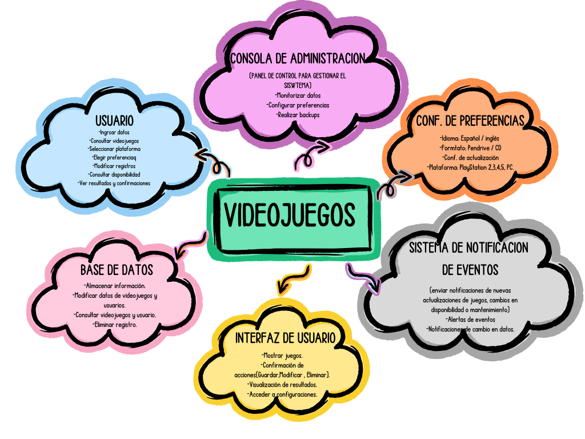

Interfaz del Sistema de Videojuegos
El sistema presenta una serie de interfaces diseñadas con un enfoque intuitivo y visualmente atractivo, alineadas con la temática de videojuegos. Cada una de ellas cumple una función específica para facilitar la experiencia del usuario al explorar, gestionar y adquirir videojuegos. A continuación, se describen las principales pantallas del sistema
1. Pantalla de Bienvenida
Propósito:
Es la primera ventana que el usuario encuentra al iniciar la aplicación. Tiene como objetivo principal ofrecer una introducción amigable y accesible al sistema
Características:
Título destacado: "¡BIENVENIDOS!", seguido de un mensaje motivador que invita al usuario a comenzar su experiencia en el mundo de los videojuegos.
Botones principales:
Comprar: Redirige al usuario a la sección de adquisición de videojuegos.
Salir: Cierra la aplicación de manera directa.
Modificar: Lleva al usuario a la sección de administración, donde puede gestionar el catálogo de videojuegos.
Sección de comentarios:
Un cuadro de texto donde los usuarios pueden escribir retroalimentación o sugerencias sobre el sistema. Este espacio fomenta la interacción y la mejora continua de la aplicación.
Botón "Enviar": Permite enviar el comentario ingresado para su almacenamiento o procesamiento.
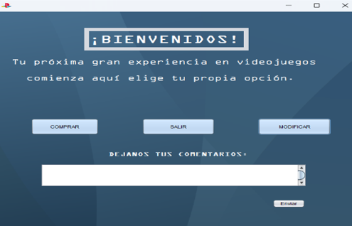
2. Pantalla de Gestión de Videojuegos.
Propósito: Permite a los administradores agregar, modificar, visualizar o eliminar videojuegos del catálogo disponible para las distintas plataformas. .
Características:
Formulario de entrada de datos: ID: Un identificador único para cada videojuego.
Nombre y Apellido: Representan los datos del comprador (o desarrollador, según el propósito del sistema).
Email y Teléfono: Datos de contacto necesarios para la gestión de compras o reservas.
Opciones de personalización:
Idiomas disponibles: Los usuarios pueden seleccionar entre Español e Inglés.
Formato del juego: Dos opciones principales: Pendrive o CD, dependiendo de la disponibilidad del contenido.
Consolas compatibles: Botones para elegir entre plataformas como PlayStation 2, PlayStation 3, PlayStation 4, PlayStation 5 y PC.
Acciones principales:
Guardar: Permite almacenar un nuevo videojuego o cliente en la base de datos.
Limpiar: Restaura los campos del formulario para ingresar nuevos datos.
Mostrar: Visualiza el catálogo actual de videojuegos o datos de clientes.
Modificar: Facilita la edición de los datos existentes en el sistema.
Eliminar: Borra un videojuego o cliente del sistema.

3. Pantalla de Inicio de Sesión
Propósito:
Garantiza que solo usuarios autorizados puedan acceder a las secciones sensibles del sistema, como la gestión del catálogo.
Características:
Diseño temático:
Una imagen de fondo que refleja un entorno de videojuegos, como el letrero "Gamer Zone", creando un ambiente inmersivo para el usuario.
Campos de entrada:
Usuario: Donde el usuario ingresa su nombre de usuario registrado.
Contraseña: Un campo seguro para ingresar la clave correspondiente.
Botones funcionales:
Entrar: Realiza la verificación de las credenciales ingresadas y permite el acceso al sistema si son correctas.
Salir: Cierra la aplicación en cualquier momento.
Volver: Redirige al usuario a la pantalla anterior o a un menú principal.
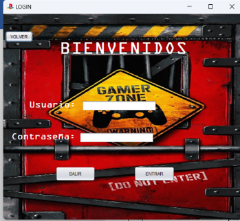
4. Primera interfaz - Modificaciones
Encabezado: Tiene un título en la parte superior que dice "MODIFICACIONES" con un diseño tipo fuente de estilo escrito a mano.
Campos de entrada:
Nombre del Juego: Un campo de texto para ingresar el nombre.
Consola: Un menú desplegable (combo box) que probablemente permite seleccionar una opción predefinida.
Almacenamiento: Un campo de texto que podría ser para especificar capacidad o tipo de almacenamiento.
Info del Juego: Otro campo de texto para ingresar información adicional.
Botón:
Hay un botón en la parte inferior que dice "GUARDAR", posiblemente para confirmar los cambios.
Botón de navegación:
Un botón que dice "VOLVER", usado para regresar a una pantalla anterior.
Diseño:
Fondo con tonalidades azuladas y un diseño gráfico (posiblemente relacionado con videojuegos).
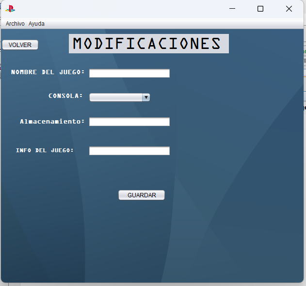
5. Segunda interfaz - Tabla Mostrar
Encabezado:
Un título al centro que dice "TABLA MOSTRAR" en un recuadro celeste con letras negras.
Tabla de datos:
Una tabla vacía con encabezados que incluyen:
Id_usuario, Nombre, Apellido, Teléfono, Email, Pendrive, CD, Español, Inglés.
Está diseñada para mostrar información en formato tabular.
Botones de acción:
"ELIMINAR": Un botón que probablemente permite borrar un registro seleccionado.
"MODIFICACIONES": Un botón para editar un registro seleccionado.
Botón de navegación:
Un botón en la parte superior izquierda que dice "VOLVER"
Diseño:
Fondo gris claro, estructura minimalista con un enfoque en funcionalidad.
Ambas interfaces parecen estar orientadas a gestionar información, posiblemente relacionada con videojuegos, almacenamiento o usuarios.

6.Interfaz general para todas las consolas
Encabezado:
Nombre de la consola (por ejemplo, "PlayStation 2") claramente visible en la parte superior.
Un botón de navegación (VOLVER) para regresar a la pantalla principal o al menú de selección.
Listado de juegos:
Una cuadrícula organizada con miniaturas de juegos compatibles con la consola seleccionada.
Cada miniatura incluye:
Imagen de portada.
Nombre del juego.
Botones como:
"Solicitar" para seleccionar un juego.
"Info" para obtener más detalles (como precio, características, requisitos).
Opciones adicionales:
Botón "COMPRAR" para adquirir los juegos seleccionados.
Indicador de almacenamiento disponible para la consola específica (si aplica).
Diseño visual:
Fondo temático que represente la consola (por ejemplo, motivos de PlayStation para PS2, PS3, PS4 y PS5; tema neutro o relacionado con hardware para PC)
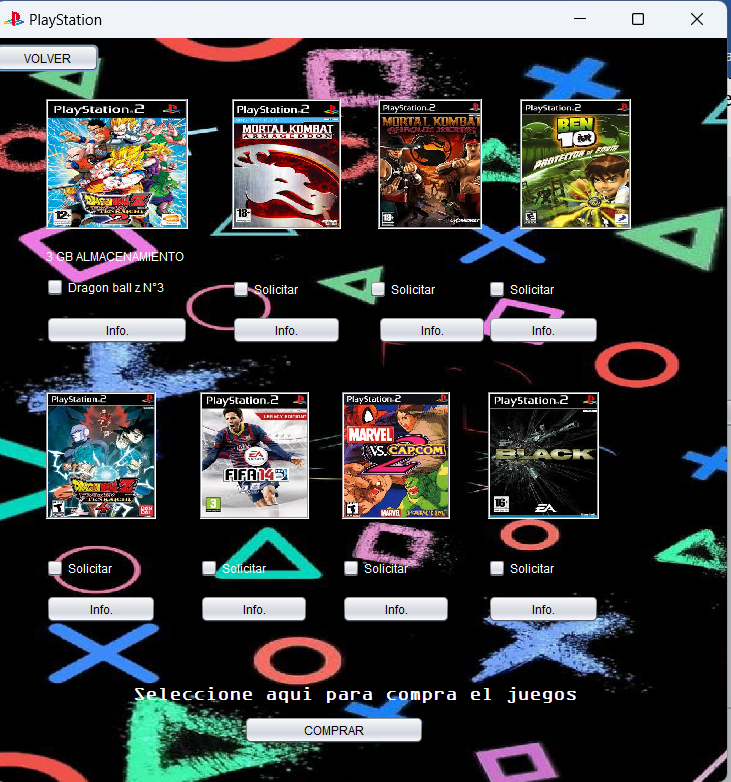
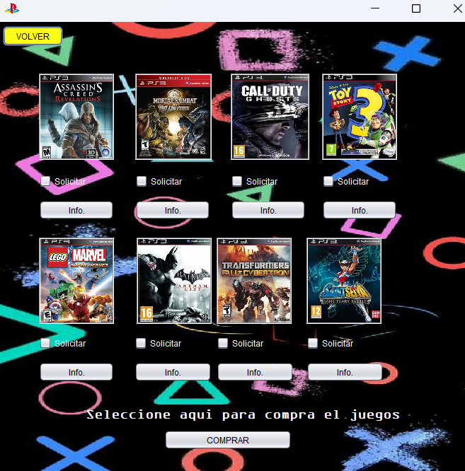
 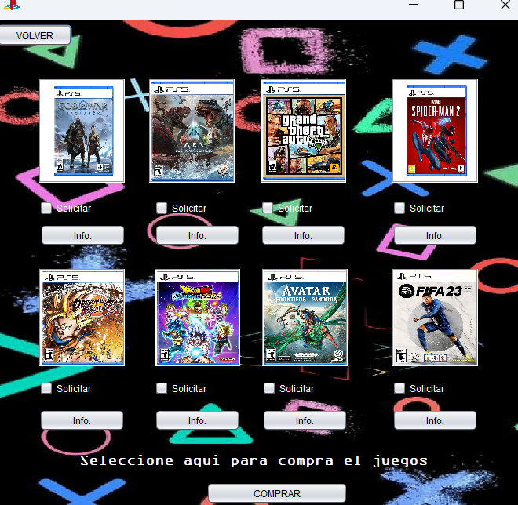
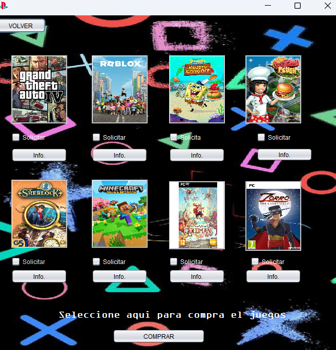
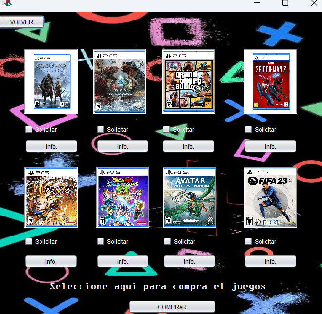
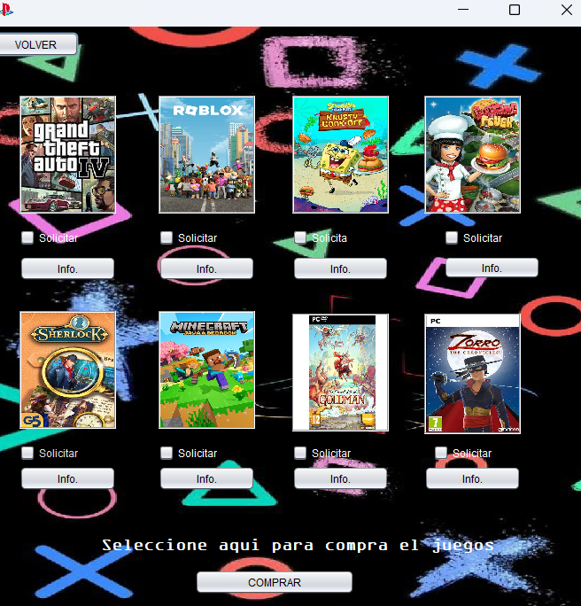
Niveles de Usuario en un Sistema de Videojuegos
1. Administrador del Sistema
Descripción:
Este nivel está diseñado para quienes gestionan y mantienen el sistema. Representa a los dueños del sistema, desarrolladores o encargados de la tienda de videojuegos.
Responsabilidades y Funciones:
Gestión del Catálogo de Videojuegos:
Agregar, modificar o eliminar videojuegos.
Gestionar la disponibilidad según consola o formato (PS2, PS3, PS4, PS5, PC).
Gestión de Usuarios:
Registrar, modificar o eliminar usuarios.
Asignar roles (Cliente, Invitado, etc.).
2. Usuario Registrado (Cliente)
Descripción:
Este nivel representa a los usuarios habituales que compran videojuegos o interactúan activamente con el sistema. Es el usuario final principal del sistema.
Responsabilidades y Funciones:
Exploración del Catálogo:
Navegar por los videojuegos organizados por consola o formato.
Buscar juegos específicos según título, consola o género.
Formulario de Compra:
Completar los datos personales (nombre, apellido, email, teléfono) para realizar compras.
Seleccionar videojuegos para añadirlos al carrito.
Confirmar y procesar compras.
Comentarios y Valoraciones:
Dejar sugerencias o comentarios sobre el sistema o videojuegos.
Acceso Restringido:
Sin permisos para modificar juegos o administrar usuarios.
3. Usuario Invitado
Descripción:
Este nivel está orientado a usuarios no registrados que desean explorar el sistema antes de crear una cuenta o realizar una compra.
Responsabilidades y Funciones:
Exploración del Catálogo:
Visualizar la lista de videojuegos y detalles básicos de los mismos (nombre, consola, formato).
Limitaciones:
No pueden realizar compras ni dejar comentarios.
No tienen acceso a configuraciones personalizadas.
4. Vendedor o Moderador (Opcional)
Descripción:
Este nivel se puede incluir si el sistema permite que varias personas gestionen aspectos específicos del catálogo o las ventas, pero sin permisos administrativos completos.
Responsabilidades y Funciones:
Gestionar títulos del catálogo (pero sin eliminar información crítica).
Revisar y responder comentarios o dudas de los usuarios.
Generar reportes de ventas (si aplica).
Justificación de los Niveles
Administrador: Este nivel asegura el correcto funcionamiento y control total del sistema. Se enfoca en la gestión interna.
Usuario Registrado: Dirigido a clientes que buscan comprar videojuegos. Este nivel fomenta la interacción y genera ingresos.
Invitado: Diseñado para captar nuevos usuarios, ofreciendo una experiencia básica que incentive el registro.
Vendedor/Moderador: Ayuda en la gestión parcial del sistema si existe la necesidad de delegar tareas sin otorgar control total.
Ejemplo de Acceso para Cada Nivel
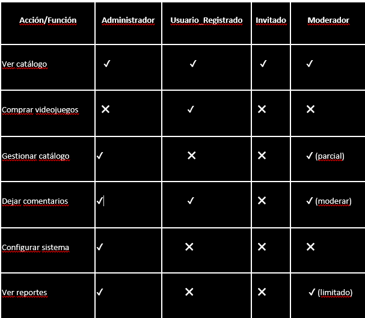
1. Ciclo de Vida en Cascada
Fases del Ciclo en el Contexto del Proyecto:
Requisitos:
Identificar las funcionalidades necesarias, como el formulario de compra, sistema de login, gestión de videojuegos, etc.
Diseño del Sistema:
Crear diagramas y estructuras, como el diseño de la interfaz gráfica (GUI) y las conexiones a la base de datos.
Implementación:
Programar las interfaces gráficas y funcionalidades del sistema en NetBeans.
Pruebas:
Validar que el formulario funcione correctamente, asegurando que los datos ingresados se registren en la base de datos.
Mantenimiento:
Realizar mejoras o solucionar errores en el futuro.
A continuación te presento un manual de usuario detallado para el formulario de videojuegos basado en los requisitos y funciones que hemos discutido. Este manual está orientado a los usuarios finales del sistema y les guiará en el uso correcto del formulario.
Manual de Usuario del Formulario de Videojuegos
Introducción
Este manual está diseñado para ayudar a los usuarios a interactuar de manera efectiva con el formulario de videojuegos. A través de este formulario, los usuarios podrán registrarse, iniciar sesión, gestionar videojuegos y realizar compras. A continuación, se describen los pasos necesarios para utilizar el sistema de manera correcta.
Requisitos Previos
Antes de utilizar el formulario, asegúrate de cumplir con los siguientes requisitos:
Tener una cuenta de usuario en el sistema (si aún no tienes una, puedes registrarte).
Conocer el nombre de usuario y contraseña de tu cuenta para poder acceder a la plataforma.
Si deseas comprar videojuegos, tener fondos suficientes en tu cuenta.
1. Pantalla de Inicio (Login)
Objetivo:
Permite a los usuarios acceder a su cuenta mediante la validación de su nombre de usuario y contraseña.
Pasos para Iniciar Sesión:
Acceder al formulario de login:
En la pantalla principal, verás un formulario con dos campos: Nombre de Usuario y Contraseña.
Introducir las credenciales:
En el campo de Nombre de Usuario, escribe tu nombre de usuario registrado en el sistema.
En el campo de Contraseña, escribe la contraseña correspondiente a tu cuenta.
Iniciar sesión:
Haz clic en el botón Iniciar Sesión para proceder.
Si las credenciales son correctas, serás redirigido a la pantalla principal del sistema, donde podrás gestionar los videojuegos o realizar compras.
Problemas de acceso:
Si olvidas tu contraseña o tienes problemas para iniciar sesión, haz clic en el enlace ¿Olvidaste tu contraseña? para recuperarla.
2. Pantalla Principal (Gestión de Videojuegos)
Objetivo:
Esta pantalla permite gestionar la compra y el visualizado de videojuegos disponibles en el sistema.
Opciones en la Pantalla Principal:
Ver Catálogo de Videojuegos:
Puedes ver todos los videojuegos disponibles para compra. Estos estarán organizados por categorías como Plataforma, Idioma y Formato.
Buscar Videojuegos:
Utiliza la barra de búsqueda para encontrar videojuegos específicos. Puedes buscar por nombre del juego, plataforma o género.
Realizar Compra:
Si encuentras un videojuego que deseas comprar, haz clic en el botón Comprar al lado del juego.
El sistema te llevará a un formulario de compra donde podrás confirmar los detalles (nombre, plataforma, precio).
3. Formulario de Compra de Videojuegos
Objetivo:
Permite a los usuarios comprar videojuegos, añadiendo al carrito y completando la transacción.
Pasos para Comprar un Videojuego:
Seleccionar un Videojuego:
En el catálogo de videojuegos, haz clic en el botón Comprar junto al videojuego que deseas adquirir.
Formulario de Compra:
Se abrirá un formulario con la siguiente información:
Nombre del videojuego: Se muestra automáticamente.
Plataforma: Elige la plataforma en la que deseas jugar (por ejemplo, PC, PlayStation, Xbox).
Idioma: Selecciona el idioma de tu preferencia (por ejemplo, español o inglés).
Formato: Selecciona el formato del videojuego (pendrive, descarga, CD, etc.).
Confirmar Compra:
Verifica que toda la información esté correcta.
Si todo es correcto, haz clic en Confirmar Compra para proceder con el pago.
Proceso de Pago:
Completa el proceso de pago según las opciones disponibles (tarjeta de crédito, PayPal, etc.).
Después de completar el pago, recibirás una confirmación de la compra y el videojuego será agregado a tu lista de compras realizadas.
________________________________________
4. Gestión de Videojuegos en tu Cuenta
Objetivo:
Permite ver y gestionar los videojuegos que has comprado a lo largo del tiempo.
Pasos para Ver Videojuegos Comprados:
Acceder a la sección de compras:
Desde la pantalla principal, haz clic en el enlace Mis Compras o Mi Biblioteca de Videojuegos.
Visualizar videojuegos:
Se mostrará una lista de todos los videojuegos que has adquirido. Puedes filtrarlos por Plataforma, Idioma, o Formato.
Detalles del videojuego:
Haz clic en cualquier juego de la lista para ver más detalles, como la fecha de compra y la plataforma en la que puedes jugarlo.
5. Actualización de Datos de Usuario
Objetivo:
Permite al usuario modificar la información de su cuenta, como nombre, correo electrónico y contraseña.
Pasos para Actualizar tu Información:
Acceder a la Configuración de la Cuenta:
En la pantalla principal, haz clic en tu nombre de usuario en la esquina superior derecha y selecciona la opción Mi Cuenta.
Modificar Datos:
En la página de configuración, podrás editar los siguientes campos:
Nombre de usuario.
Correo electrónico.
Contraseña: Para cambiar la contraseña, introduce la nueva contraseña en los campos correspondientes.
Guardar Cambios:
Después de realizar los cambios, haz clic en el botón Guardar para actualizar tu información.
6. Cerrar Sesión
Objetivo:
Permite al usuario cerrar sesión de manera segura al finalizar su interacción con el sistema.
Pasos para Cerrar Sesión:
Cerrar Sesión:
En la esquina superior derecha de la pantalla, haz clic en tu nombre de usuario y selecciona la opción Cerrar sesión.
Confirmación:
Serás redirigido a la pantalla de inicio (login), y tu sesión será cerrada correctamente.
Conclusión
Este formulario te permite gestionar videojuegos de manera fácil y eficaz. Ya sea que estés buscando juegos para comprar o gestionar tus adquisiciones anteriores, el sistema está diseñado para ser intuitivo y fácil de usar. Si tienes alguna duda o problema, puedes contactar al soporte técnico.
¡Disfruta de tu experiencia en la plataforma de videojuegos!
Este manual de usuario cubre las funcionalidades básicas de tu sistema de formulario para videojuegos, facilitando su comprensión y uso. Si hay más detalles específicos que quieras agregar, ¡dime y los incluyo!